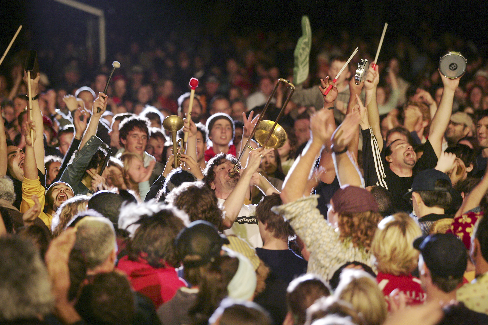

Port Fairy Folk Festival
The former haunt of whalers and seal-hunters, Port Fairy on Victoria’s grandiose Shipwreck Coast seems an apt location for this much-loved music festival, which turns 40 in 2016. Now a highlight of the international folk circuit, it’s four days of local and international acts – mainly folk, but some blues, roots and world music thrown in.
L’International des Feux Loto-Québec
Thousands camp out on rooftops and on the Pont Jacques-Cartier for the planet’s hottest pyrotechnics display. The 10 shows last 30 minutes each and are held on Saturday nights and a few Wednesday nights for the entire month of July. Guided walks with national park staff continue for 30 minutes to a dry riverbed at nearby Banu Nggulung where the huge monitor lizards are often seen.
Fête des Neiges
Featuring ice-sculpting contests, dogsled races, snow games and costumed characters like mascot polar bear Boule de Neige, Montréal’s Snow Festival is held over four weekends in late January and early February. A great place for sledding, ice-skating, Ziplining, curling and skiing.